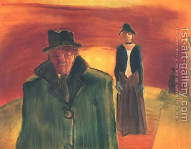

Yoma 3 - What is so special about Yom Kippur?
Earlier it was said that just as the Levites spent seven days near the Tabernacle, separated from all, for the consecration, so too there will be a yearly event requiring separation for seven days, and that event is Yom Kippur.
But what is special about Yom Kippur? Why not say that this seven-day separation has to precede any sacrifice? And if you tell me that we don’t know which Kohen will be doing the service, I will answer that maybe the whole group serving in the Temple on a specific week should require solitary confinement beforehand? - The Talmud answers that it is fair to compare consecration, which was done only on a specific day, the eighth day of the service, to Yom Kippur, which is also only once year, as opposed to sacrifices which are brought every day.
The Talmud then tries to connect the seven-day separation to other holidays, such as Pesach, Shavuot, Sukkot, Shemini Atzeret, and to Rosh HaShanah - and disproves such connections, giving a specific reason. For example, other holidays occurs three times a year, but Yom Kippur - only once. Finally, Ravina finds a reason that works in every case: Yom Kippur is special because all of its services were performed by the High Priest, and this can only be compared to the first consecration, which was completely done by the first High Priest - Aharon.
Art: Separated by Istvan Farkas Istvan Farkas 1887, Budapest - 1944, Auschwitz